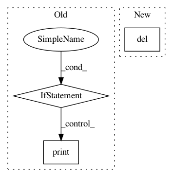

d9c24dfc42d3af7859d98fa237d665e18e0f5c9a,se3cnn/util/dataset/crystals.py,CrystalCIF,preprocess,#,80
Before Change
partition_start = 0
for site_a_coords in site_a_coords_entry:
nei = structure.get_sites_in_sphere(site_a_coords.numpy(), max_radius, include_index=True)
if nei:
// - array of bitsets 8 64-bit words each would be nice, but Python does not have real bitsets
// - pickle heavily inflates memory on dump and fails
// - hickle is (very) slow on dump and inflates stored size
// TODO: complete layout of bs to single the tensor, fill mis-alignments with "non-values", there is no nan for int type, but -1 will do
bs_entry = torch.tensor([entry[2] for entry in nei], dtype=torch.short) // [r_part_a] - store as a 16-bit integer, convert to 64-bit index/address on rolling basis
bs_proxy_list.append(bs_entry)
site_b_coords = np.array([entry[0].coords for entry in nei]) // [r_part_a, 3]
site_a_coords = np.array(site_a_coords).reshape(1, 3) // [1, 3]
radii_proxy_list.append(site_b_coords - site_a_coords) // implicit broadcasting of site_a_coords
else:
print(f"Encountered empty nei for {file_rel_path}: {site_a_coords}")
radii_proxy = np.concatenate(radii_proxy_list) // [r, 3]
radii_proxy[np.linalg.norm(radii_proxy, ord=2, axis=-1) < 1e-10] = 0.
radii_list.append(radii_proxy)
bs_list.append(bs_proxy_list)
After Change
if max_radius:
torch.save(bs, join(max_radius_dir, "bs.pth")) // tensor [sum(a_i), bs_pad]
del bs
torch.save(radii, join(max_radius_dir, "radii.pth")) // tensor [sum(r_i), 3] - xyz
del radii
In pattern: SUPERPATTERN
Frequency: 3
Non-data size: 3
Instances
Project Name: mariogeiger/se3cnn
Commit Name: d9c24dfc42d3af7859d98fa237d665e18e0f5c9a
Time: 2019-10-05
Author: lapchevsky.k@gmail.com
File Name: se3cnn/util/dataset/crystals.py
Class Name: CrystalCIF
Method Name: preprocess
Project Name: nipy/dipy
Commit Name: 14d296009281bee1b55ed42adffd6e8fe7975d6a
Time: 2018-08-13
Author: marc.cote.19@gmail.com
File Name: dipy/viz/tests/test_ui.py
Class Name:
Method Name: test_ui_radio_button
Project Name: nipy/dipy
Commit Name: 14d296009281bee1b55ed42adffd6e8fe7975d6a
Time: 2018-08-13
Author: marc.cote.19@gmail.com
File Name: dipy/viz/tests/test_ui.py
Class Name:
Method Name: test_ui_checkbox